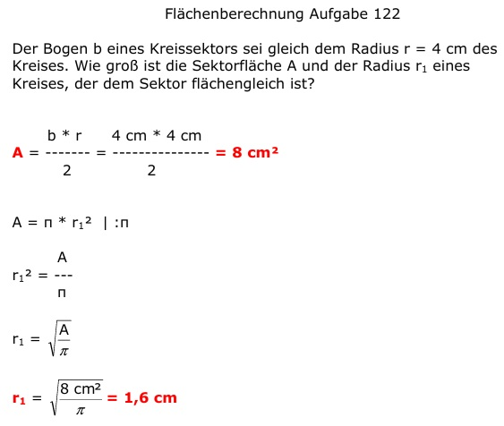

Aufgabe 122 Der Bogen b eines Kreissektors sei gleich dem Radius r = 4 cm des Kreises. Wie groß ist die Sektorfläche A und der Radius ri eines Kreises, der dem Sektor flächengleich ist? b * r 4 cm * 4 cm A = ------- = --------------- = 8 cm2 2 2 A = π * rri2 |:π A rri2 = --- π 